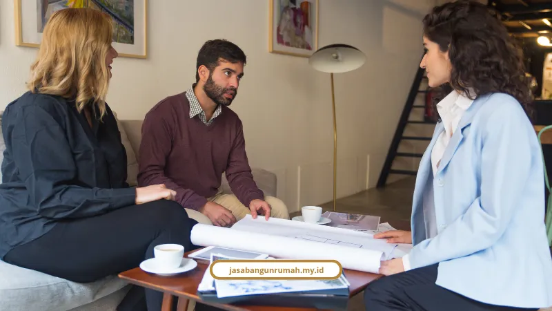

Daftar Isi
Kontraktor rumah Jakarta yang layak dipilih adalah yang menyediakan paket sipil sampai full finishing dalam satu kontrak, dengan RAB rinci per item dan garansi struktur tertulis. Begitu saja jawabannya, sisanya tinggal pembuktian di lapangan.
Saya sering dengar keluhan yang itu-itu saja dari orang yang mau bangun rumah di Jakarta. Takut tukang kabur di tengah jalan. Takut material di-downgrade diam-diam. Takut biaya yang tadinya disepakati Rp 500 juta, tahu-tahu membengkak jadi Rp 700 juta tanpa penjelasan jelas.
Belum lagi soal perizinan. Jakarta itu kota dengan aturan tata ruang yang ketat. Ada KDB, ada GSB, ada urusan PBG yang bikin pusing orang awam yang cuma mau punya rumah nyaman buat keluarga.
Makanya sebelum bahas lebih jauh, penting untuk paham dulu apa saja yang sebenarnya dikerjakan kontraktor dari nol sampai kunci diserahkan.
Apa Saja Tahapan Pembangunan Rumah dari Sipil sampai Full Finishing?
Tahapan pembangunan rumah dimulai dari pekerjaan struktur atau sipil, baru kemudian masuk ke tahap finishing arsitektural dan instalasi MEP. Dua fase besar ini yang menentukan kekuatan sekaligus tampilan akhir rumah.
Pekerjaan struktur mencakup bagian yang tidak kelihatan tapi paling krusial:
- Penggalian dan pembuatan pondasi
- Pengecoran sloof, kolom, dan balok
- Pemasangan pelat lantai berstandar SNI
- Dinding bata atau hebel
- Rangka atap baja ringan
Kalau bagian ini asal-asalan, rumah bisa retak dalam hitungan tahun. Ini kenapa pengalaman kontraktor benar-benar menentukan.
Setelah struktur berdiri, baru masuk tahap full finishing dan interior. Bagian ini meliputi plesteran dan acian, penutup lantai keramik atau granit, plafon gypsum atau PVC, pengecatan, instalasi MEP untuk listrik dan plumbing, sampai custom furniture dan kitchen set.
Untuk gambaran waktu, rumah dua lantai dengan luas bangunan 150 sampai 200 meter persegi biasanya butuh estimasi pengerjaan 4 sampai 6 bulan. Kalau ada kontraktor yang janji selesai dalam sebulan untuk luasan segitu, saya sarankan curiga dulu.
Detail teknis pekerjaan struktur dan finishing ini juga jadi bahan pertimbangan penting kalau Anda sedang membutuhkan jasa kontraktor bangunan untuk proyek rumah tinggal maupun ruko di Jakarta.

Yang perlu diperhatikan adalah kualitas finishing bukan sekadar tampilan, tapi juga indikator bahwa biaya bangun rumah dikelola sesuai spesifikasi. Jika detail seperti plester, keramik, dan cat sudah tepat, risiko revisi dan pembengkakan biaya di tengah jalan menjadi jauh lebih kecil.
Untuk soal sistem kerja, pilih yang punya mekanisme jelas seperti kontraktor bergaransi dan tips memilih kontraktor terpercaya, supaya Anda tidak hanya dapat bangunan yang rapi, tetapi juga proses yang aman dari biaya siluman dan perubahan jadwal mendadak.
Berapa Estimasi Biaya Jasa Kontraktor Rumah Jakarta 2026?
Estimasi biaya jasa kontraktor rumah Jakarta 2026 dibagi menjadi tiga grade, mulai dari Rp 2,5 juta hingga lebih dari Rp 11 juta per meter persegi, tergantung tingkat spesifikasi material yang dipilih.
Berikut rincian per grade supaya Anda punya patokan sebelum menyusun anggaran:
- Grade Standar/Ekonomis: Rp 2,5 juta - Rp 6,5 juta per m² (finishing keramik atau HPL standar)
- Grade Menengah/Middle: Rp 4,5 juta - Rp 9,5 juta per m² (finishing granit 60x60, cat duco/HPL)
- Grade Mewah/Luxury: Rp 7 juta - Rp 11 juta++ per m² (marmer slab, veneer kayu, kustomisasi impor)
Komponen upah tukang juga ikut menentukan total biaya. Taufiq Hidayat, Direktur Mortar Indonesia sekaligus praktisi konstruksi, menjelaskan bahwa upah harian tukang di Jabodetabek berkisar Rp 170.000 sampai Rp 270.000 per hari, tergantung keahlian spesifiknya seperti tukang batu, kayu, besi, atau listrik.
Sementara itu Wildan dari Rebwild Construction menyebutkan upah tukang harian khusus area Jakarta sudah naik 15 sampai 20 persen, jadi sekitar Rp 230.000 sampai Rp 240.000 per hari. Untuk kenek atau helper, kisarannya Rp 190.000 sampai Rp 200.000 per hari.
Kalau Anda ingin melihat rincian lebih lengkap soal komponen harga per item pekerjaan, kami sudah menyusun pembahasan khusus di layanan kontraktor rumah yang menjelaskan harga borongan kontraktor Jakarta per meter persegi terbaru.
Kenapa Harus Pilih Sistem Borongan Full Transparan?
Sistem borongan full lebih menguntungkan dibanding borongan tenaga karena pemilik rumah terima beres tanpa perlu belanja material sendiri, dengan kepastian biaya dan linimasa yang jelas sejak awal.
Aorta Adly F., CEO PT Adly Grant Mandiri sekaligus praktisi kontraktor, menjelaskan perbedaan mendasar dua sistem ini. Sistem borongan tenaga menuntut pemilik rumah menyediakan material sendiri, sehingga menguras waktu untuk belanja dan mengawasi kualitas bahan.
Sedangkan sistem borongan full atau Design & Build memungkinkan pemilik rumah tinggal terima beres. Ini jelas lebih masuk akal buat orang sibuk yang tidak punya waktu bolak-balik ke toko bangunan.
Poin paling krusial dari sistem ini adalah RAB transparan. Anggaran disusun detail item per item, mulai dari volume pekerjaan sampai spesifikasi merk material, tanpa ada biaya siluman yang muncul belakangan.
Kalau rumah Anda sudah berdiri tapi butuh perbaikan atap, fasad, atau cat ulang, sistem borongan transparan yang sama juga berlaku untuk jasa renovasi rumah Jakarta bergaransi yang kami tangani.
Kenapa Memilih Layanan Kontraktor di Jasa Bangun Rumah?
Layanan kontraktor di Jasa Bangun Rumah layak dipilih karena sudah berpengalaman sejak 2010, menyelesaikan lebih dari 250 proyek, dan memberikan garansi struktur tertulis setelah serah terima kunci.
Beberapa poin keunggulan yang bisa Anda pegang:
- Berdiri sejak 2010, berawal dari biro gambar arsitektur di Jakarta
- Sudah menyelesaikan 250+ proyek rumah tinggal, ruko, dan bangunan komersial
- Tingkat kepuasan klien mencapai 98 persen
- Dikelola 40+ tim profesional termasuk arsitek dan insinyur sipil bersertifikat
- RAB transparan tanpa biaya tersembunyi
- Garansi struktur dan laporan progres berkala berupa foto dan laporan tertulis
Kami juga mendampingi pengurusan izin PBG yang prosesnya biasanya memakan waktu 2 sampai 4 minggu. Aturan tata ruang DKI Jakarta, seperti Pergub DKI Jakarta No. 31 Tahun 2022 tentang RDTR, mengatur batasan KDB, KLB, KDH, sampai kewajiban sistem resapan air seperti zero run off dan sumur resapan.
Semua ini bukan hal yang bisa disepelekan kalau tidak mau proyek bermasalah dengan Satpol PP di kemudian hari.
Kalau Anda ingin tahu alur kerja kami dari konsultasi awal sampai serah terima kunci secara detail, kami sudah membahasnya lengkap di tahapan proses kerja kontraktor rumah.
Soal hasil kerja, biar klien sendiri yang cerita. Budi Santoso, klien rumah tinggal di Bekasi, menyebut proses pembangunan rumahnya berjalan sangat rapi dan tim selalu memberi kabar perkembangan proyek dengan hasil yang melebihi ekspektasi.
Siti Aminah, pemilik ruko di Surabaya, juga mengaku sangat terbantu dengan RAB transparan sejak awal tanpa biaya tak terduga, bahkan renovasi rukonya selesai lebih cepat dari jadwal.
Buat Anda yang butuh sentuhan akhir supaya rumah tidak sekadar berdiri tapi juga nyaman ditinggali, kami juga menyediakan jasa desain interior dan jasa arsitek dalam satu paket layanan terpadu.
Saatnya Wujudkan Rumah Tanpa Drama
Membangun rumah di Jakarta memang penuh tantangan, mulai dari lahan sempit, aturan KDB, sampai risiko kontraktor nakal yang bikin proyek mangkrak. Tapi semua itu bisa diminimalisir kalau Anda memilih kontraktor dengan sistem borongan full, RAB transparan, dan garansi struktur jelas.
Jasa Bangun Rumah hadir sebagai solusi Design & Build satu pintu, dari perencanaan arsitek sampai serah terima kunci, dengan rekam jejak 15 tahun dan 250+ proyek selesai. Kami juga melayani jasa kontraktor rumah untuk area Jakarta Selatan, Barat, Pusat, Timur, Utara, dan Jabodetabek.
Kalau Anda sudah punya lahan dan sedang mencari kepastian anggaran, jangan tunggu sampai harga material naik lagi. Hubungi kami sekarang di WhatsApp 0889-8964-3555 atau email info@jasabangunrumah.my.id untuk konsultasi desain dan estimasi RAB gratis.